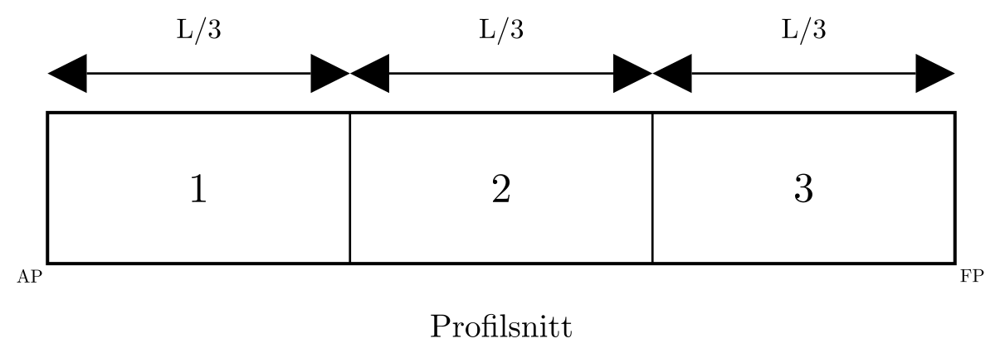
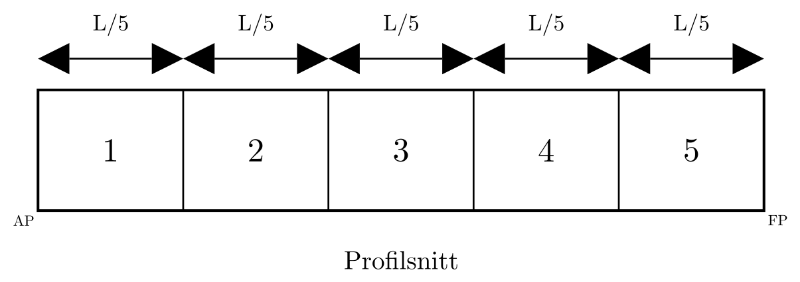

Oppgaver i
skadestabilitet (Tapt oppdrift-metoden)
1. Instruksjoner
Løs hver oppgave med tydelige enheter og konsekvent
fortegnskonvensjon.
Vis mellomregningene, ikke bare sluttsvaret.
Kontroller akseptkriteriene til slutt
For oppgaver med skadelengde skal \(T_S\) finnes fra \(LBT = (L-l_d)BT_S\) , samtidig som
deplasementet bevares i denne metoden (\(\nabla_S=\nabla\) ).
2. Oppgavesett A:
Enkeltkonsepter
A1. Likevekt ved symmetrisk
skade
Last ned øvingsnotatbok: Oppgave_A1.ipynb (Høyreklikk → Lagre lenke som... om filen åpnes i nettleseren i stedet for å lastes ned)
Oppgave:
Beregn ny likevektsdypgang ved symmetrisk fylling.
Gitt:
Rektangulær lekter med \(L = 50.0\
\mathrm{m}\) , \(B = 10.0\
\mathrm{m}\) , \(D = 5.0\
\mathrm{m}\)
Initial dypgang \(T = 2.80\
\mathrm{m}\)
Lengde av skadet avdeling: \(l_d = 2.0\
\mathrm{m}\)
Anta fullstendig tap av oppdrift i avdelingen og parallell
nedsynking i denne oppgaven
Besvarelse:
Fasit:
\(T_S = 2.9167\ \mathrm{m}\)
A2. Skadelengde
og dypgang ved symmetrisk skade
Last ned øvingsnotatbok: Oppgave_A2.ipynb (Høyreklikk → Lagre lenke som... om filen åpnes i nettleseren i stedet for å lastes ned)

Figur: Rektangulær lekter med 3 like store langskips avdelinger -
den midtre avdelingen er skadet.
Oppgave:
En lekter er delt inn i 3 like store avdelinger langskips. Den
midtre avdelingen er skadet.
Gitt:
Rektangulær lekter med \(L = 60.0\
\mathrm{m}\) , \(B = 12.0\
\mathrm{m}\) , \(D = 6.0\
\mathrm{m}\)
Initial dypgang \(T = 3.00\
\mathrm{m}\)
3 like store avdelinger, slik at \(l_d =
L/3\)
Besvarelse:
Skadelengde \(l_d\)
Symmetrisk skadet dypgang \(T_S\)
Sjekk om \(T_S < D\)
Fasit:
Bruk den skjulte løsningen nedenfor til egenkontroll
A3. Reduksjon i
Vannlinjeareal og \(BM\)
Last ned øvingsnotatbok: Oppgave_A3.ipynb (Høyreklikk → Lagre lenke som... om filen åpnes i nettleseren i stedet for å lastes ned)
Oppgave:
Beregn redusert vannlinjeareal etter skade.
Finn redusert vannlinjetreghetsmoment og oppdatert \(BM_{T_S}\) .
Gitt:
Rektangulær lekter med \(L=72.0\
\mathrm{m}\) , \(B=11.0\
\mathrm{m}\) , \(T=2.80\
\mathrm{m}\)
Lengde av skadet avdeling \(l_d=6.0\
\mathrm{m}\)
Volumdeplasement for lekteren: \(\nabla=LBT=2217.6\ \mathrm{m^3}\)
Bruk formler for rektangulær lekter
Leveranse:
Vannlinjeareal før/etter skade
\(I_{WL}\) før/etter skade\(BM_T\) før/etter skade
Fasit:
Vannlinjeareal: \(792\ \rightarrow\ 726\
\mathrm{m^2}\)
\(I_{WL}\) : \(7986.0\ \rightarrow\ 7320.5\
\mathrm{m^4}\) \(BM_T\) : \(3.601\ \rightarrow\ 3.301\
\mathrm{m}\)
A4. Stabilitetskontroll
etter skade
Last ned øvingsnotatbok: Oppgave_A4.ipynb (Høyreklikk → Lagre lenke som... om filen åpnes i nettleseren i stedet for å lastes ned)
Oppgave:
Beregn oppdatert \(KB_S\) , \(BM_{T_S}\) og \(GM_S\) i skadet tilstand.
Gitt:
Oppdriftssenter i skadet tilstand: \(KB_S=1.62\ \mathrm{m}\)
Tverrskips vannlinjetreghetsmoment i skadet tilstand: \(I_{WL_S}=7600\ \mathrm{m^4}\)
Volumdeplasement: \(\nabla=2160\
\mathrm{m^3}\)
Vertikalt tyngdepunkt: \(KG=4.20\
\mathrm{m}\)
Leveranse:
Oppdaterte hydrostatiske data etter skade
Kort stabilitetstolkning
Fasit:
\(KB_S=1.62\ \mathrm{m}\) , \(BM_{T_S}=3.519\ \mathrm{m}\) , \(GM_S=0.939\ \mathrm{m}\) \(GM_S>0\ \mathrm{m}\) :
gjenværende initial stabilitet er positiv
3. Oppgavesett B:
Parameterstudie
B1. Sensitivitetsstudie
Last ned øvingsnotatbok: Oppgave_B1.ipynb (Høyreklikk → Lagre lenke som... om filen åpnes i nettleseren i stedet for å lastes ned)
Et regnearkmal for oppgaven er tilgjengelig her: B1_sensitivitetsstudie_mal.csv (Høyreklikk → Lagre lenke som... om filen åpnes i nettleseren i stedet for å lastes ned)
Oppgave:
Bruk tabellen nedenfor (eller last ned malen).
For hvert tilfelle beregnes \(l_d=L/N\) , deretter \(T_S\) , \(BM_{T_S}\) og \(GM_S\) .
Sammenlign hvordan endringene i inndata påvirker \(T_S\) og \(GM_S\) .
Gitt:
Bruk \(KG=4.20\ \mathrm{m}\) og
\(\rho=1.0\ \mathrm{t/m^3}\) for alle
tilfeller.
Anta en skadet avdeling og bruk box-barge-tilnærminger.
Tilfelle
\(L\)
(m)\(B\)
(m)\(T\)
(m)Antall avdelinger \(N\)
\(l_d=L/N\) (m)\(T_S\)
(m)\(BM_{T_S}\) (m)\(GM_S\)
(m)
Basis
60.0
12.0
3.00
5
Færre avdelinger
60.0
12.0
3.00
3
Bredere lekter
60.0
14.0
3.00
5
Stor initial dypgang
60.0
12.0
3.50
5
Leveranse:
Utfylt tabell
Kort trenddiskusjon
Fasit:
4. Oppgavesett C: Trim
C1. Trimmoment
Last ned øvingsnotatbok: Oppgave_C1.ipynb (Høyreklikk → Lagre lenke som... om filen åpnes i nettleseren i stedet for å lastes ned)

Figur: Fem like store avdelinger; bruk denne inndelingen i
oppgaven
Oppgave:
Bestem trimmomentet som oppstår når avdeling 4 (regnet fra AP) er
skadet.
Gitt:
Rektangulær lekter med \(L=100.0\
\mathrm{m}\) , \(B=20.0\
\mathrm{m}\) , \(T=3.50\
\mathrm{m}\)
5 like store avdelinger langskips, slik at hver avdeling er \(20.0\ \mathrm{m}\) lang
Avdeling 4 er skadet (fra \(x=60\)
til \(x=80\ \mathrm{m}\) )
Bruk \(\rho=1.025\ \mathrm{t/m^3}\)
og \(LCG=50.0\ \mathrm{m}\) fra AP
I denne oppgaven brukes \(LCB_S=45.0\
\mathrm{m}\) fra AP
Leveranse:
Vektdeplasement \(\Delta\)
Trimarm \(l_k=LCG-LCB_S\)
Trimmoment \(M_{trim}=\Delta\,l_k\)
Fasit:
C2. Trim fra gitt \(M_{T}\) og \(BM_{L_S}\)
Last ned øvingsnotatbok: Oppgave_C2.ipynb (Høyreklikk → Lagre lenke som... om filen åpnes i nettleseren i stedet for å lastes ned)
Oppgave:
Beregn enhetstrimmomentet \(MCT_{1cm_S}\) og total trim.
Gitt:
\(\Delta=7175\ \mathrm{t}\) \(L=100.0\ \mathrm{m}\) \(BM_{L_S}=207.619\
\mathrm{m}\) \(M_{T}=35{,}875\
\mathrm{t\,m}\)
Leveranse:
Enhetstrimmomentet \(MCT_{1cm_S}\)
i \(\mathrm{t\,m/cm}\)
Den totale trimmen \(t\)
Fasit:
C3. Fordeling av
total trim og endelig dypgang
Last ned øvingsnotatbok: Oppgave_C3.ipynb (Høyreklikk → Lagre lenke som... om filen åpnes i nettleseren i stedet for å lastes ned)
Oppgave:
Fordel kjent trim i akterlig og forlig komponent og beregn endelige
dypganger.
Gitt:
\(t=240.83\ \mathrm{cm}\) \(LCF_S=45.0\ \mathrm{m}\) fra AP,
\(L=100.0\ \mathrm{m}\) Symmetrisk skadet dypgang før trim: \(T_S=4.375\ \mathrm{m}\)
Leveranse:
\(t_a\) og \(t_f\) Endelige dypganger \(T_A\) og \(T_F\)
Fasit:
5. Oppgavesett D:
Fullstendig forløp ved skade
D1. Full Skadet
Likevekt Fra Start Til Slutt
Last ned øvingsnotatbok: Oppgave_D1.ipynb (Høyreklikk → Lagre lenke som... om filen åpnes i nettleseren i stedet for å lastes ned)
Oppgave:
Lekteren skal beregnes fra initial tilstand til endelig
akseptkontroll ved skade.
Gitt:
Rektangulær lekter: \(L = 60.0\
\mathrm{m}\) , \(B = 12.0\
\mathrm{m}\) , \(D = 6.0\
\mathrm{m}\)
Initial dypgang: \(T = 3.00\
\mathrm{m}\)
Tyngdepunkt: \(KG = 4.20\
\mathrm{m}\)
Lengde av skadet avdeling: \(l_d = 3.5\
\mathrm{m}\)
Oppdaterte hydrostatiske verdier i skadet tilstand:
\(KB_S = 1.62\ \mathrm{m}\) \(I_{WL_S} = 7600\
\mathrm{m^4}\) \(I_{F_S} = 2.10 \times 10^6\
\mathrm{m^4}\) \(LCB_S = 29.75\ \mathrm{m}\) fra
AP\(LCF_S = 30.00\ \mathrm{m}\) fra
AP\(LCG = 30.00\ \mathrm{m}\) fra
AP
Bruk \(\rho = 1.0\
\mathrm{t/m^3}\)
Leveranse:
Endelige dypganger \(T_A\) og \(T_F\)
Akseptkontroller (\(GM_S > 0\
\mathrm{m}\) , \(\max(T_A,T_F) <
D\) )
Fasit:
\(T_S = 3.1858\ \mathrm{m}\) , \(T_A = 3.1781\ \mathrm{m}\) , \(T_F = 3.1935\ \mathrm{m}\) , \(GM_S = 0.939\ \mathrm{m}\) , PASS
6.
Oppgavesett E: Intakt tank med fri væskeoverflate vs skadet tank
Last ned øvingsnotatbok: Oppgave_E1.ipynb (Høyreklikk → Lagre lenke som... om filen åpnes i nettleseren i stedet for å lastes ned)
Oppgave:
En lekter har en tank som går fra side til side og med lengde gitt
under. Sammenlign:
korrigert \(GM\) for fri
væskeoverflate i slakk tank, og der tettheten til innholdet er det
samme
\(GM_S\) for skadet tank
Gitt:
Samme lekter og samme geometriske forutsetninger
\(L = 50.0\ \mathrm{m}\) \(B = 10.0\ \mathrm{m}\) \(T = 2.80\ \mathrm{m}\) \(T_S = T\) \(l_tank = 5.0\ \mathrm{m}\) \(l_d = l_{tank}\) Anta \(T_S = T\) (parallell
nedsynking neglisjeres for sammenligningen)
Leveranse:
Kort utledning eller forklaring
Kvantitativ sammenligning
Fysisk tolkning
Fasit:
\(\Delta GM_{FSE} = \Delta BM_T = 0.298\
\mathrm{m}\) - begge metoder gir identisk GM-reduksjon
7. Løsningsdel
A1 Løsning
Gitt: - \(L = 50.0\ \mathrm{m}\) -
\(B = 10.0\ \mathrm{m}\) - \(D = 5.0\ \mathrm{m}\) - \(T = 2.80\ \mathrm{m}\) - \(l_d = 2.0\ \mathrm{m}\)
Løs direkte for skadet likevektsdypgang \(T_S\) :
\[
LBT = (L-l_d)BT_S
\]
\[
T_S = \frac{L}{L-l_d}T = \frac{50}{50-2.0}\cdot 2.80 = 2.9167\
\mathrm{m}
\]
Rask kontroll mot dybden:
\[
T_S = 2.9167\ \mathrm{m} < D = 5.0\ \mathrm{m}\ \Rightarrow\
\text{dypgangskrav oppfylt}
\]
A2 Løsning
Vis løsning
Gitt:
\(L = 60.0\ \mathrm{m}\) \(B = 12.0\ \mathrm{m}\) \(D = 6.0\ \mathrm{m}\) \(T = 3.00\ \mathrm{m}\) \(l_d = L/3 = 20.0\
\mathrm{m}\)
Løs for \(T_S\) :
\[
LBT = (L-l_d)BT_S
\]
\[
T_S = \frac{L}{L-l_d}T = \frac{60}{60-20}\cdot 3.00 = 4.50\ \mathrm{m}
\]
Kontroll mot dybden:
\[
T_S = 4.50\ \mathrm{m} < D = 6.0\ \mathrm{m}\ \Rightarrow\
\text{dypgangskrav oppfylt}
\]
A3 Løsning
Bruk inndataene fra A2:
\(L=72.0\ \mathrm{m}\) , \(B=11.0\ \mathrm{m}\) , \(T=2.80\ \mathrm{m}\) \(l_d=6.0\ \mathrm{m}\) \(\nabla=LBT=72\cdot 11\cdot 2.8=2217.6\
\mathrm{m^3}\)
Vannlinjeareal for og etter skade:
\[
A_{WL}=LB=72\cdot 11=792\ \mathrm{m^2}
\]
\[
A_{WL_S}=(L-l_d)B=(72-6)\cdot 11=726\ \mathrm{m^2}
\]
\[
\Delta A_{WL}=792-726=66\ \mathrm{m^2}
\]
Intakt tverrskips vannlinjetreghetsmoment for en
box-barge-vannlinje:
\[
I_{WL}=\frac{LB^3}{12}=\frac{72\cdot 11^3}{12}=7986.0\ \mathrm{m^4}
\]
Skadet tverrskips vannlinjetreghetsmoment:
\[
I_{WL_S}=\frac{(L-l_d)B^3}{12}=\frac{66\cdot 11^3}{12}=7320.5\
\mathrm{m^4}
\]
Intakt og skadet tverrskips metasenterradius:
\[
BM_T=\frac{I_{WL}}{\nabla}=\frac{7986.0}{2217.6}=3.601\ \mathrm{m}
\]
\[
BM_{T_S}=\frac{I_{WL_S}}{\nabla}=\frac{7320.5}{2217.6}=3.301\ \mathrm{m}
\]
Reduksjon:
\[
\Delta I_{WL}=7986.0-7320.5=665.5\ \mathrm{m^4}
\]
\[
\Delta BM_T=3.601-3.301=0.300\ \mathrm{m}
\]
Fasit:
Vannlinjeareal for/etter skade: \(792\
\rightarrow\ 726\ \mathrm{m^2}\)
\(I_{WL}\) for/etter skade: \(7986.0\ \rightarrow\ 7320.5\
\mathrm{m^4}\) \(BM_T\) for/etter skade: \(3.601\ \rightarrow\ 3.301\
\mathrm{m}\) Tolkning: skadet vannlinje har lavere treghet, derfor avtar \(BM_T\) .
A4 Løsning
Bruk skadet-tilstand-inndataene fra D1:
\(KB_S=1.62\ \mathrm{m}\) \(I_{WL_S}=7600\
\mathrm{m^4}\) \(\nabla=2160\ \mathrm{m^3}\) \(KG=4.20\ \mathrm{m}\)
Beregn skadet tverrskips metasenterradius:
\[
BM_{T_S}=\frac{I_{WL_S}}{\nabla}=\frac{7600}{2160}=3.519\ \mathrm{m}
\]
Beregn deretter skadet metasentrisk høyde:
\[
GM_S=KB_S+BM_{T_S}-KG=1.62+3.519-4.20=0.939\ \mathrm{m}
\]
Fasit:
\(KB_S=1.62\ \mathrm{m}\) \(BM_{T_S}=3.519\ \mathrm{m}\) \(GM_S=0.939\ \mathrm{m}\) Stabilitetstolkning: \(GM_S>0\) ,
slik at gjenværende initial tverrskips stabilitet fortsatt er
positiv.
B1 Løsning
Forutsetninger for en rask sensitivitetsstudie:
En skadet avdeling, med like lange avdelinger: \(l_d=L/N\)
Bare symmetrisk dypgang (ingen trim i denne oppgaven): \[T_S=\frac{L}{L-l_d}T\]
Box-barge-tilnærming vertikalt: \(KB_S\approx T_S/2\)
Tilnærmet skadet tverrskips vannlinjetreghet: \(I_{WL_S}\approx (L-l_d)B^3/12\)
Bevart volumdeplasement i denne modellen: \(\nabla=LBT\)
Sammenlign \(GM_S\) med konstant
\(KG=4.20\ \mathrm{m}\) : \[BM_{T_S}=\frac{I_{WL_S}}{\nabla},\qquad
GM_S\approx KB_S+BM_{T_S}-KG\]
Eksempeloversikt:
Tilfelle
\(L\)
(m)\(B\)
(m)\(T\)
(m)\(N\) \(l_d\)
(m)\(T_S\)
(m)\(BM_{T_S}\) (m)\(GM_S\)
(m)
Basis
60
12
3.0
5
12.0
3.750
3.200
0.875
Færre avdelinger (stor skadelengde)
60
12
3.0
3
20.0
4.500
2.667
0.717
Bredere lekter
60
14
3.0
5
12.0
3.750
4.356
2.031
Stor initial dypgang
60
12
3.5
5
12.0
4.375
2.743
0.731
Trendoppsummering:
Stor skadelengde (\(N\) mindre) gir
større \(T_S\) og vil ofte redusere
\(GM_S\) .
Økt bredde gir klart større \(I_{WL_S}\) og \(BM_{T_S}\) , slik at \(GM_S\) bedres.
Større intakt dypgang gir høyere \(KB_S\) , men også større deplasement; i
dette oppsettet kan nettoeffekten bli lavere \(GM_S\) .
D1 Løsning
Steg 1: Initialt deplasement
\[
\nabla = LBT = 60 \cdot 12 \cdot 3.00 = 2160\ \mathrm{m^3}
\]
Med \(\rho = 1.0\
\mathrm{t/m^3}\) :
\[
\Delta = 2160\ \mathrm{t}
\]
Steg 2: Parallell nedsynking på grunn av tapt oppdrift
\[
LBT = (L-l_d)BT_S
\]
\[
T_S = \frac{L}{L-l_d}T = \frac{60}{60-3.5}\cdot 3.00 = 3.1858\
\mathrm{m}
\]
\[
\nabla_S = \nabla = 2160\ \mathrm{m^3}
\]
\[
\Delta_S = \Delta = 2160\ \mathrm{t}
\]
Steg 3: Oppdatert hydrostatikk
\[
BM_{T_S} = \frac{I_{WL_S}}{\nabla} = \frac{7600}{2160} = 3.519\
\mathrm{m}
\]
\[
BM_{L_S} = \frac{I_{F_S}}{\nabla} = \frac{2.10 \times 10^6}{2160} =
972.2\ \mathrm{m}
\]
\[
GM_S = KB_S + BM_{T_S} - KG = 1.62 + 3.519 - 4.20 = 0.939\ \mathrm{m}
\]
Steg 4: Trim og fordeling av dypgang
Med AP-baserte koordinater brukes \(LCG =
30.00\ \mathrm{m}\) og \(LCB_S = 29.75\
\mathrm{m}\) :
\[
M_{trim} = \Delta \times (LCG - LCB_S) = 2160(30.00 - 29.75) = 540.0\
\mathrm{t\,m}
\]
Tilnærmet moment til trimendring på 1 cm:
\[
MCT_{1cm_S} = \frac{\Delta \times BM_{L_S}}{100 \times L} = \frac{2160
\cdot 972.2}{100 \cdot 60} = 350.0\ \mathrm{t\,m/cm}
\]
\[
trim = \frac{M_{trim}}{MCT_{1cm_S}} = \frac{540.0}{350.0} = 1.543\
\mathrm{cm} = 0.01543\ \mathrm{m}
\]
Med \(LCF_S = 30.00\ \mathrm{m}\)
fra AP (midskips), blir AP-baserte trimandeler like store:
\[
a_{akter}=\frac{LCF_S}{L}=0.50,\qquad a_{for}=\frac{L-LCF_S}{L}=0.50
\]
\[
t_a = trim\cdot a_{akter}=0.00771\ \mathrm{m},\qquad t_f = trim\cdot
a_{for}=0.00771\ \mathrm{m}
\]
\[
T_F = T_S + t_f = 3.1935\ \mathrm{m}
\]
\[
T_A = T_S - t_a = 3.1781\ \mathrm{m}
\]
Steg 5: Akseptkontroller
\[
GM_S = 0.939\ \mathrm{m} > 0\ \mathrm{m}\ \Rightarrow\ \text{OK}
\]
\[
T_{crit} = \max(T_A, T_F) = 3.1935\ \mathrm{m} < D = 6.0\ \mathrm{m}\
\Rightarrow\ \text{OK}
\]
Sluttvurdering:
Kravet til gjenværende stabilitet er oppfylt.
Kravet til dypgang mot dybde er oppfylt.
Beregnet symmetrisk skadet dypgang: \(T_S
= 3.1858\ \mathrm{m}\) .
Endelige skadede dypganger: \(T_A =
3.1781\ \mathrm{m}\) og \(T_F = 3.1935\
\mathrm{m}\) .
E1 Løsning
Bruk inndataene fra E1:
\(L = 50.0\ \mathrm{m}\) , \(B = 10.0\ \mathrm{m}\) , \(T = 2.80\ \mathrm{m}\) \(l_{tank} = l_d = 5.0\
\mathrm{m}\) \(\nabla = LBT = 50\cdot 10\cdot 2.80 =
1400\ \mathrm{m^3}\)
Metode 1 - Fri væskeoverflate-korreksjon (intakt slakk
tank):
Tverrskips treghetsmoment for tankens fri overflate:
\[
i_{tank} = \frac{l_{tank}\,B^3}{12} = \frac{5.0\cdot 10^3}{12} = 416.7\
\mathrm{m^4}
\]
Korreksjon (samme tetthet som sjøvann, \(\rho_{content}=\rho\) ):
\[
\Delta GM_{FSE} = \frac{i_{tank}}{\nabla} = \frac{416.7}{1400} = 0.298\
\mathrm{m}
\]
Metode 2 - Tapt oppdrift (skadet avdeling, \(l_d = l_{tank}\) ):
Reduksjon i tverrskips vannlinjetreghetsmoment:
\[
\Delta I_{WL} = \frac{l_d\,B^3}{12} = \frac{5.0\cdot 10^3}{12} = 416.7\
\mathrm{m^4}
\]
Tilsvarende reduksjon i tverrskips metasenterradius:
\[
\Delta BM_T = \frac{\Delta I_{WL}}{\nabla} = \frac{416.7}{1400} = 0.298\
\mathrm{m}
\]
Sammenligning:
\[
\Delta GM_{FSE} = \Delta BM_T = 0.298\ \mathrm{m}
\]
Resultatet er identisk fordi brøken \(\frac{l\,B^3/12}{\nabla}\) er den samme i
begge metoder når tanken og den skadede avdelingen har lik geometri og
lik tetthet.
Fysisk tolkning:
Begge korreksjonene stammer fra det samme matematiske uttrykket -
tverrskips treghetsmoment delt på deplasementet.
For den slakke tanken virker dette som en virtuell stigning av \(G\) (frioverflateeffekt).
For den skadede avdelingen er det en reell reduksjon i \(BM_T\) (redusert vannlinjeareal).
Gitt nøyaktig lik geometri og tetthet gir de to metodene identisk
GM-tap.